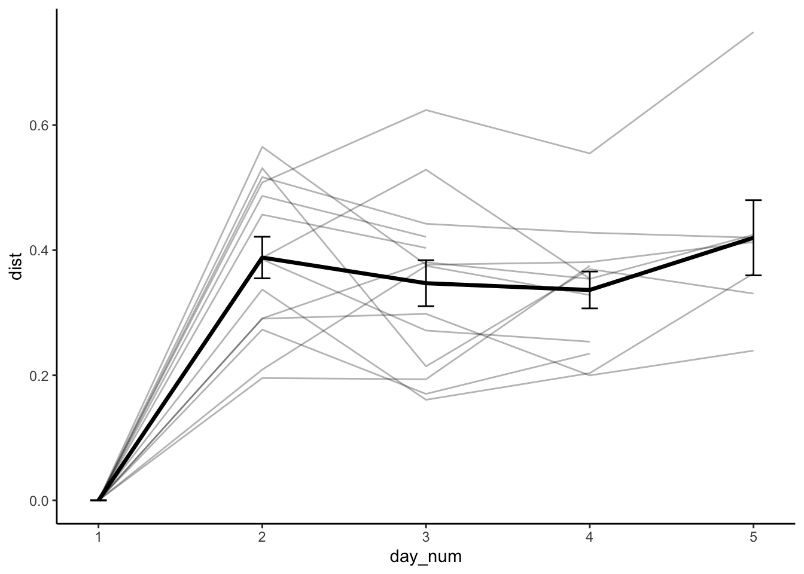

Chapter 13 do animals respond differently over time?
Inclusion of random slopes did not improve model fit and resulted in singularity, indicating consistent temporal trajectories across individuals.
boundary (singular) fit: see help('isSingular')[1] TRUELinear mixed model fit by REML. t-tests use Satterthwaite's method ['lmerModLmerTest']
Formula: dist ~ day_num + (day_num | animal_id)
Data: df_dist
REML criterion at convergence: -45.4
Scaled residuals:
Min 1Q Median 3Q Max
-1.0811 -0.8548 -0.2130 0.5408 2.3665
Random effects:
Groups Name Variance Std.Dev. Corr
animal_id (Intercept) 0.0001364 0.01168
day_num 0.0005994 0.02448 -1.00
Residual 0.0204911 0.14315
Number of obs: 61, groups: animal_id, 14
Fixed effects:
Estimate Std. Error df t value Pr(>|t|)
(Intercept) 0.04792 0.04308 47.83834 1.112 0.272
day_num 0.08658 0.01592 22.27165 5.439 1.76e-05 ***
---
Signif. codes: 0 '***' 0.001 '**' 0.01 '*' 0.05 '.' 0.1 ' ' 1
Correlation of Fixed Effects:
(Intr)
day_num -0.849
optimizer (nloptwrap) convergence code: 0 (OK)
boundary (singular) fit: see help('isSingular')Type III Analysis of Variance Table with Satterthwaite's method
Sum Sq Mean Sq NumDF DenDF F value Pr(>F)
day_num 0.75527 0.75527 1 50.911 33.498 4.425e-07 ***
---
Signif. codes: 0 '***' 0.001 '**' 0.01 '*' 0.05 '.' 0.1 ' ' 1refitting model(s) with ML (instead of REML)Data: df_dist
Models:
m1: dist ~ day_num + (1 | animal_id)
m2: dist ~ day_num + (day_num | animal_id)
npar AIC BIC logLik deviance Chisq Df Pr(>Chisq)
m1 4 -47.656 -39.213 27.828 -55.656
m2 6 -45.608 -32.942 28.804 -57.608 1.9515 2 0.3769Divergence occurred early (day 1–2) and then plateaued
$emmeans
day emmean SE df lower.CL upper.CL
day_1 0.000 0.0299 36.0 -0.0606 0.0606
day_2 0.388 0.0299 36.0 0.3277 0.4489
day_3 0.347 0.0299 36.0 0.2867 0.4079
day_4 0.342 0.0317 40.2 0.2780 0.4060
day_5 0.407 0.0392 52.2 0.3286 0.4858
Degrees-of-freedom method: kenward-roger
Confidence level used: 0.95
$contrasts
contrast estimate SE df t.ratio p.value
day_1 - day_2 -0.38828 0.0325 43.0 -11.936 <.0001
day_1 - day_3 -0.34729 0.0325 43.0 -10.676 <.0001
day_1 - day_4 -0.34201 0.0342 43.7 -10.002 <.0001
day_1 - day_5 -0.40720 0.0413 44.9 -9.869 <.0001
day_2 - day_3 0.04099 0.0325 43.0 1.260 0.7166
day_2 - day_4 0.04627 0.0342 43.7 1.353 0.6601
day_2 - day_5 -0.01892 0.0413 44.9 -0.459 0.9906
day_3 - day_4 0.00528 0.0342 43.7 0.154 0.9999
day_3 - day_5 -0.05991 0.0413 44.9 -1.452 0.5982
day_4 - day_5 -0.06519 0.0420 44.4 -1.551 0.5361
Degrees-of-freedom method: kenward-roger
P value adjustment: tukey method for comparing a family of 5 estimates ggplot(df_dist, aes(day_num, dist, group = animal_id)) +
geom_line(alpha = 0.3) +
stat_summary(aes(group = 1), fun = mean, geom = "line", size = 1.2) +
stat_summary(aes(group = 1), fun.data = mean_se, geom = "errorbar", width = 0.1) +
theme_classic()